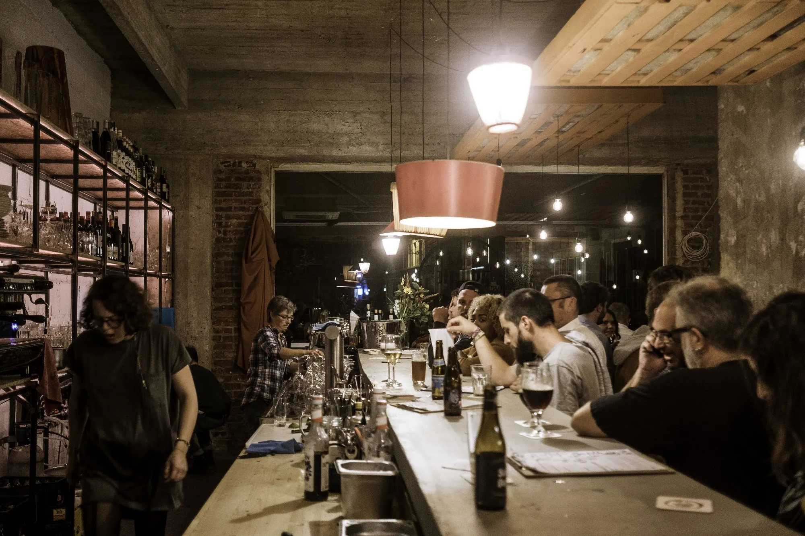
ChezJuliette
Bar à tous et tout
Bières belges au fût et en bouteille, fromages choisis chez deux fromageries, croissants le week-end, des jeux, des livres et un chien qui habite là. Place Maurice Servais, à Namur.
4,5 sur 5 · 290 avis Google
Ici, tout coule de source.
Béton brut et briques, lattes de bois orange au plafond, damier noir et blanc au sol, chaises de bistrot de toutes les époques. On entre pour une bière ou un café, on reste pour l'accueil, les jeux et la conversation.
« […] Des jeux et livres sont a disposition des clients, et il y a des chiens trop chou ! […] »
alexpilou1, avis Google« […] Jeux pour les enfants et les adultes. Guitare. Piano. […] »
Christophe D., avis Google« Si vous cherchez un bar chill avec une déco et un personnel chaleureux, vous etes au bon endroit […] »
Richard D., avis Google
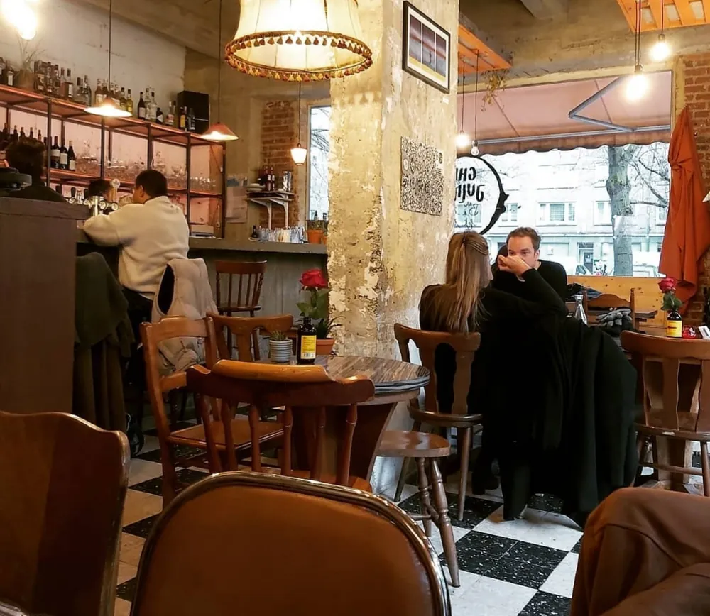
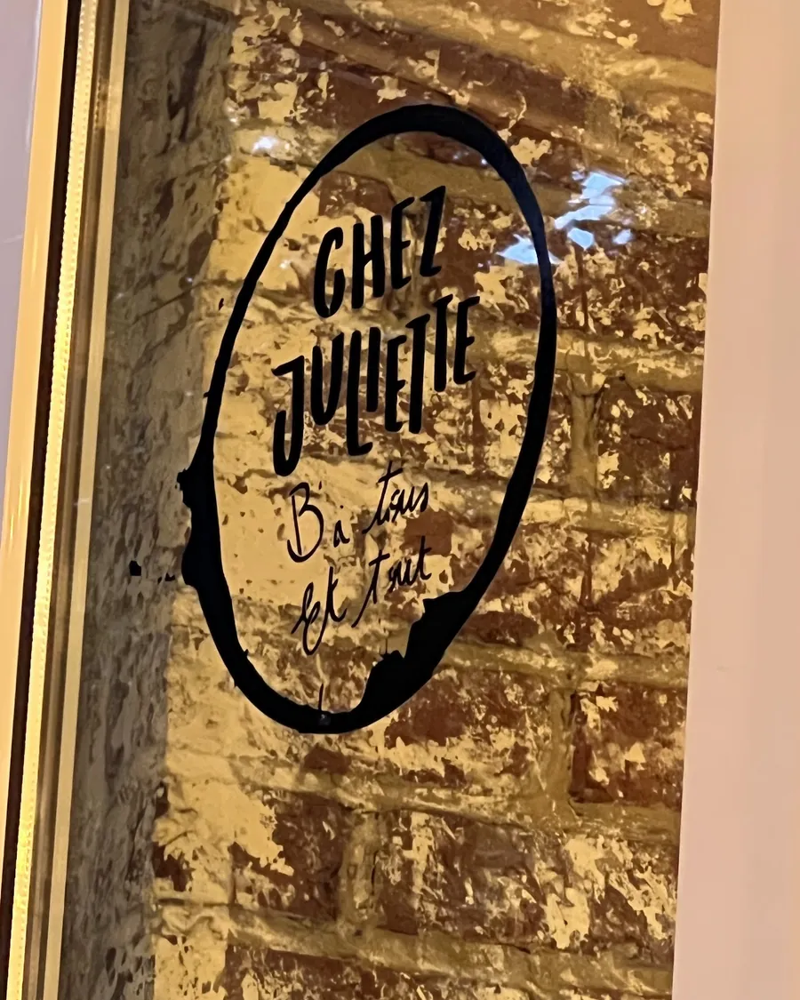
Des fromages soigneusement sélectionnés, des bières qui tournent
La carte de Juliette, en lettres de machine à écrire, corrigée à la main quand une bière s'en va. Un extrait, avec les prix relevés sur la carte du bar.
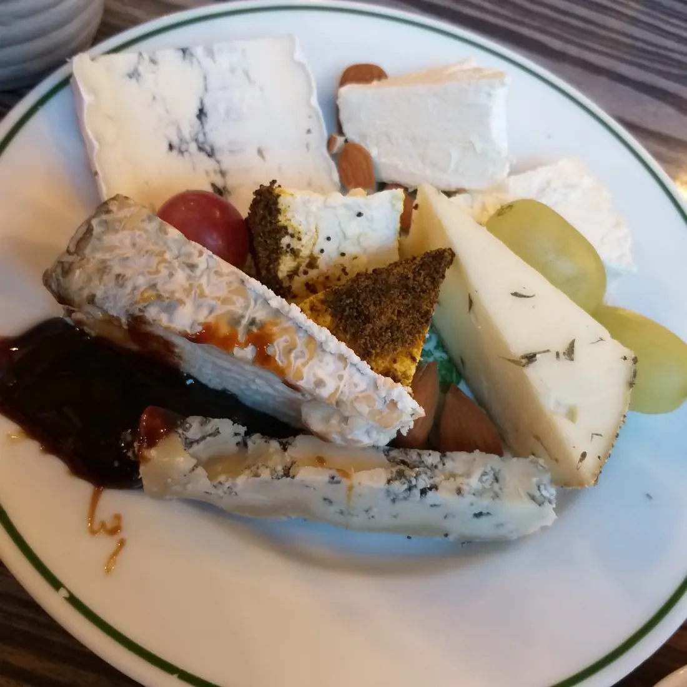
Les délices fromagers
Fromageries du Samson et du Gros Chêne, saucissons So’CissonAssiette de fromages à partagerpain et beurre16,00 €
Cornet de fromageVieux Présent fermier5,00 €
Cornet de saucissonsaucisson ibérique5,00 €
So’Cissonfumé, noix, bleu d’Auvergne ou comté7,50 €
Chips2,60 €
« […] les gérantes qui parviennent toujours à fournir des explications détaillées sur les fromages proposés à la dégustation […] »The Mastermind, avis Google
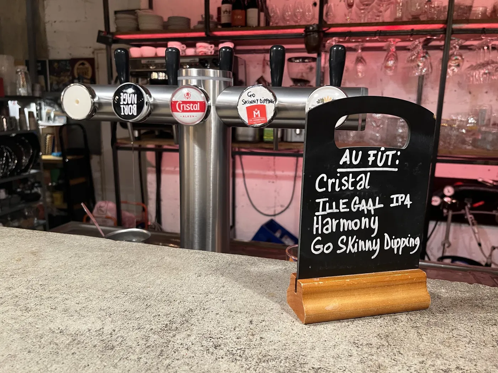
Merveilles à siroter
Au fût, en bouteille, et sans alcool aussiAu fût
Cristal3,00 €
Illegaal IPA4,50 €
Harmony4,50 €
Go Skinny Dipping4,50 €
Quelques bouteilles
Westmalle Triple5,40 €
Kriek Boon4,10 €
Lupulus Placebosans alcool4,60 €
« […] j ai pris une bière " harmonie "au fut une très belle découverte ! […] »Marinne M., avis Google
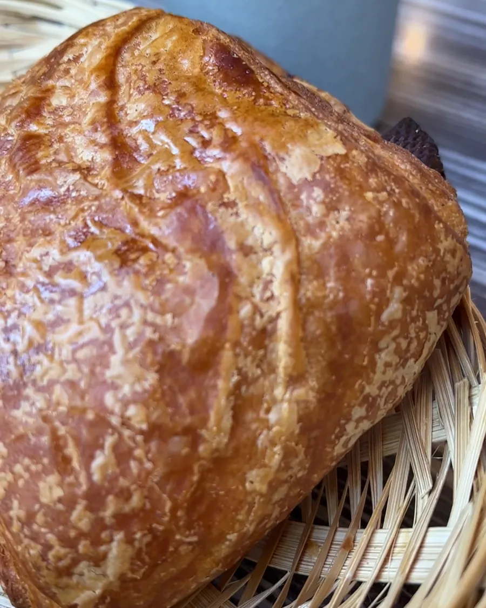
Le petit déjeuner
Samedi et dimanche, de 9 h jusqu’à épuisementCroissant ou pain au chocolat3,00 €
Couque suisse4,00 €
Œuf à la coquepain et beurre5,00 €
Et à toute heure
Cappuccino, latteservis dans de la porcelaine à motifs
« […] Ici tout coule de source. Même le Bissap a 4,9€. […] »Christophe D., avis Google
Prix relevés sur la carte du bar ; ils peuvent avoir bougé depuis. Une question ? 0491 88 75 37
Quatre fûts, quarante-huit bouteilles
et la carte bouge : les barrées laissent leur placeTrappistes de Chimay et de Westmalle, gueuze, kriek et faro Boon, saisons Dupont, Bruxellensis et Zinnebir, stouts, IPA, et cinq bières sans alcool. Demandez conseil au comptoir.
Service au bar le week-end
à partir de 17 h
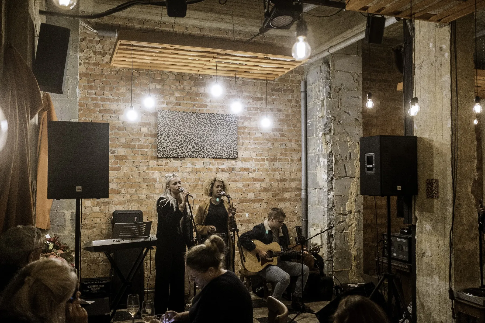
Un piano, une guitare, et des soirs de concert
Au fond de la salle, entre le mur de briques et les ampoules suspendues, la place pour deux voix, une guitare et un clavier. Les nouvelles du bar passent par sa page Facebook.
Une table, un coin pour votre groupe
Un anniversaire, un apéro entre collègues, une assiette de fromages à partager : choisissez le jour, l’heure et le nombre.
Ce qu’en disent les habitués
Du cappuccino du matin à la dernière bière
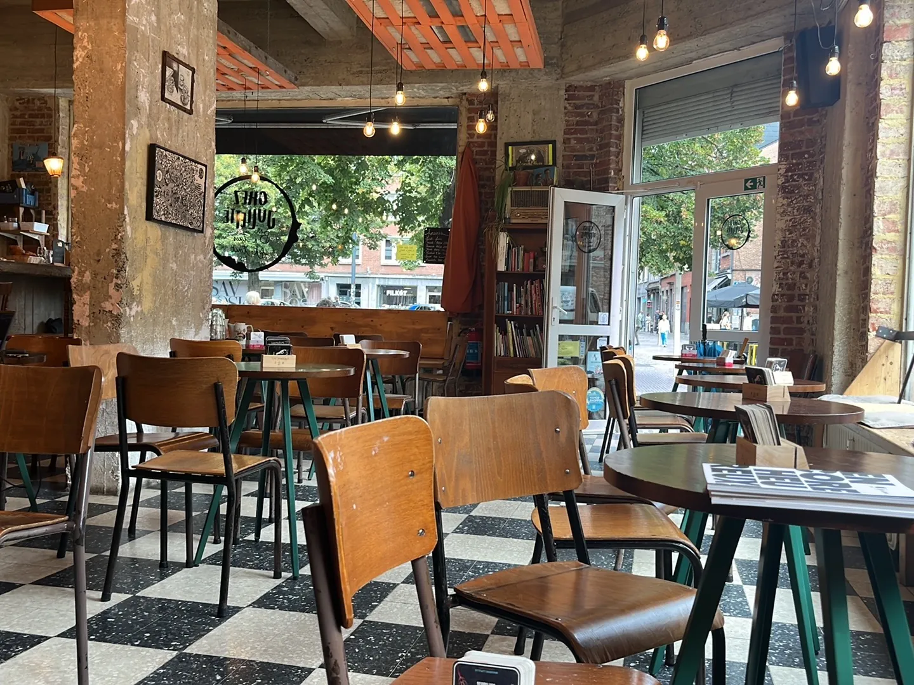
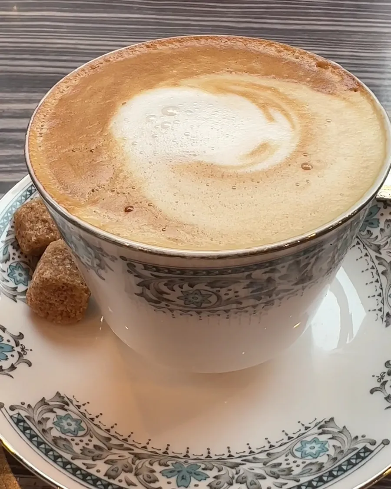
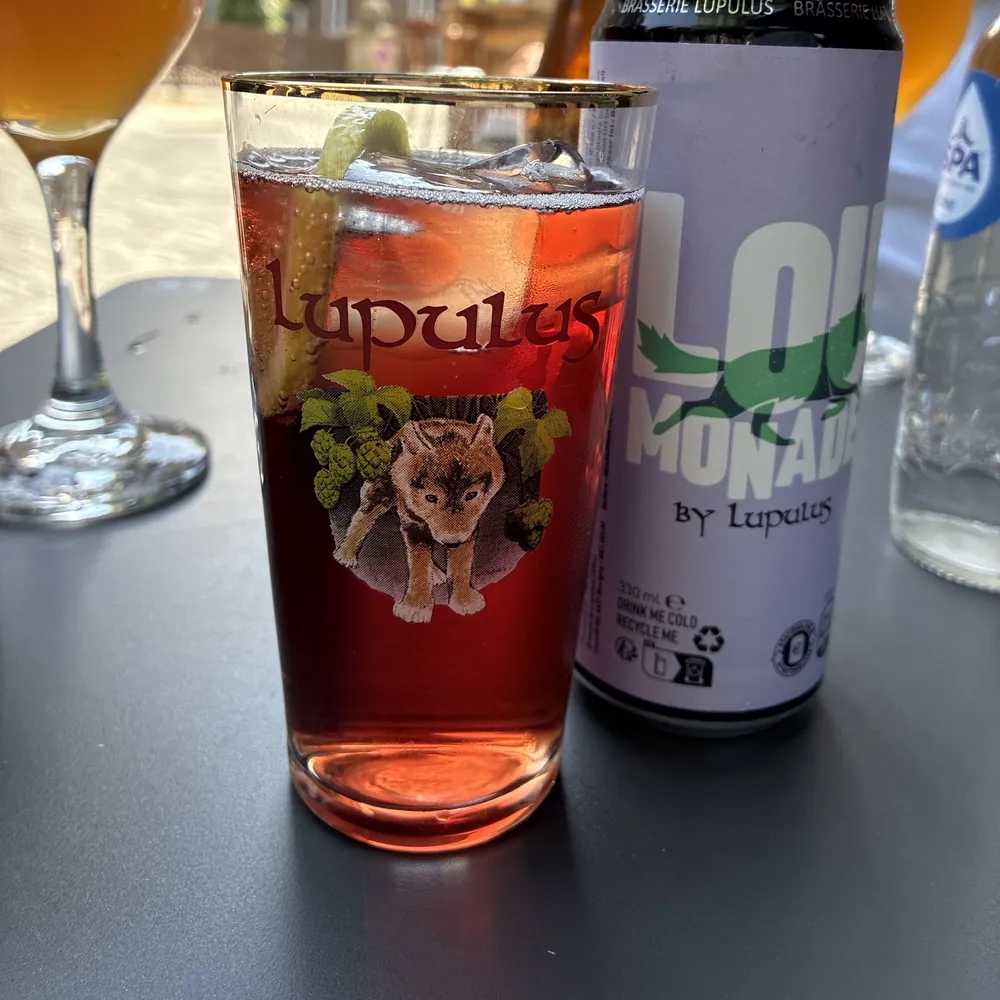
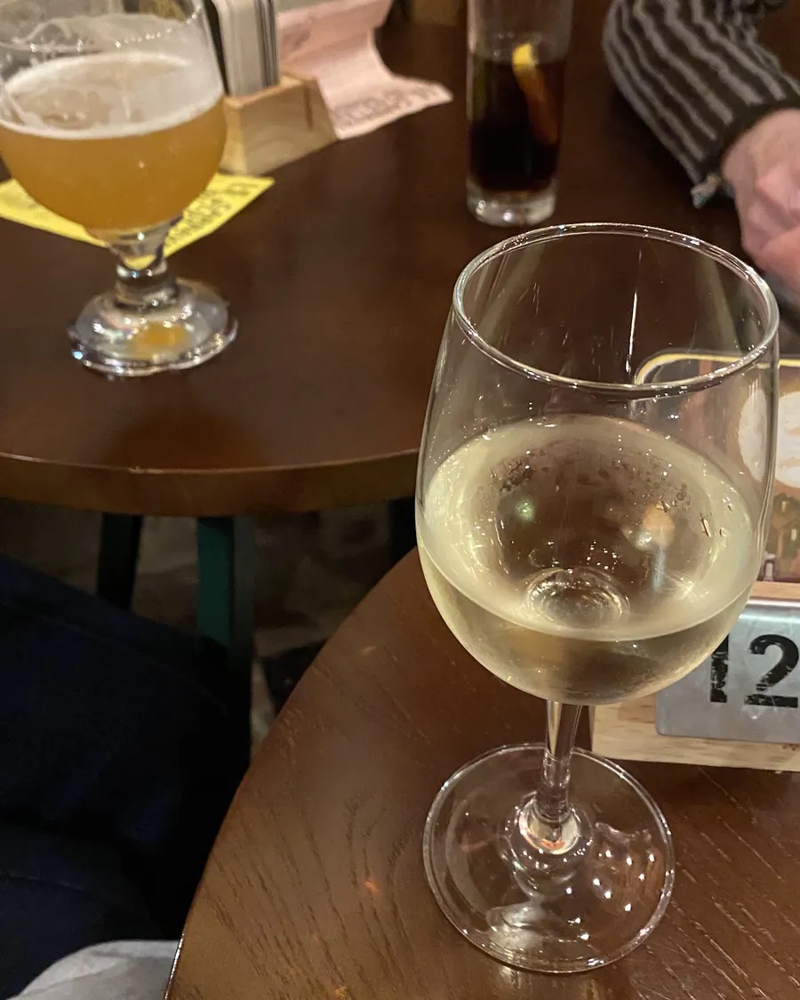
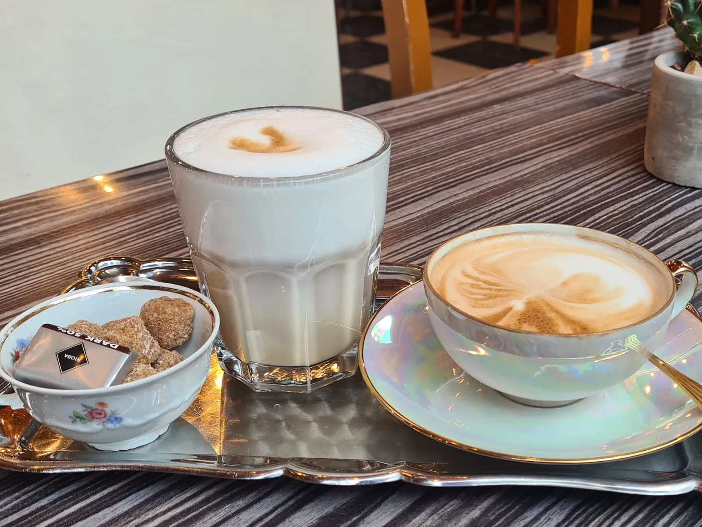
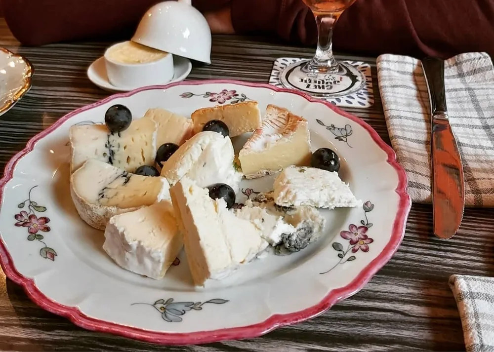
Six jours sur sept, jusqu’à minuit en fin de semaine
Du mardi au dimanche
| lundi | fermé |
|---|---|
| mardi | 14 h 30 – 22 h |
| mercredi | 14 h 30 – 22 h |
| jeudi | 14 h 30 – 22 h |
| vendredi | 13 h – minuit |
| samedi | 9 h – minuitpetit déjeuner dès 9 h |
| dimanche | 9 h – 22 hpetit déjeuner dès 9 h |
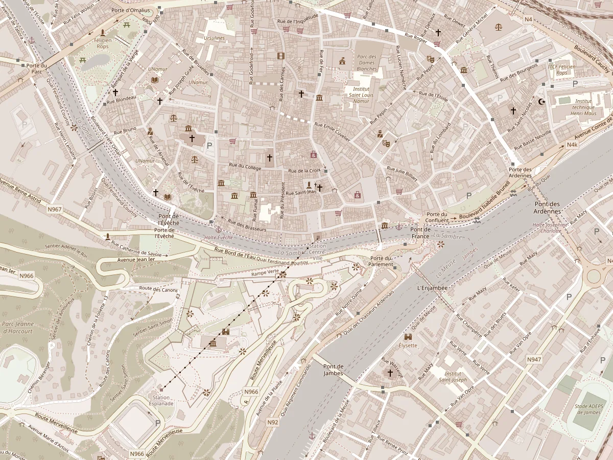
Itinéraire © OpenStreetMap